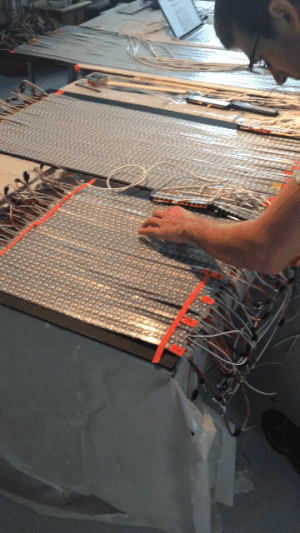

Dan's a new media artist, teacher and tinkerer based in Montreal, actively developing installations, sculptures and nonsense. He often uses interactivity to promote connections between audiences, objects and the environment.
He has exhibited lighting installations at festivals and galleries including: Lumens (2021), Up Here Urban Arts & Music (2019), Otis Mountain Get Down (2016-2019), The Montreal Neurological Institute (2017), Studio XX (2017), and Eastern Bloc (2016).
freder [dot] daniel [at] gmail [dotcom]
facebook